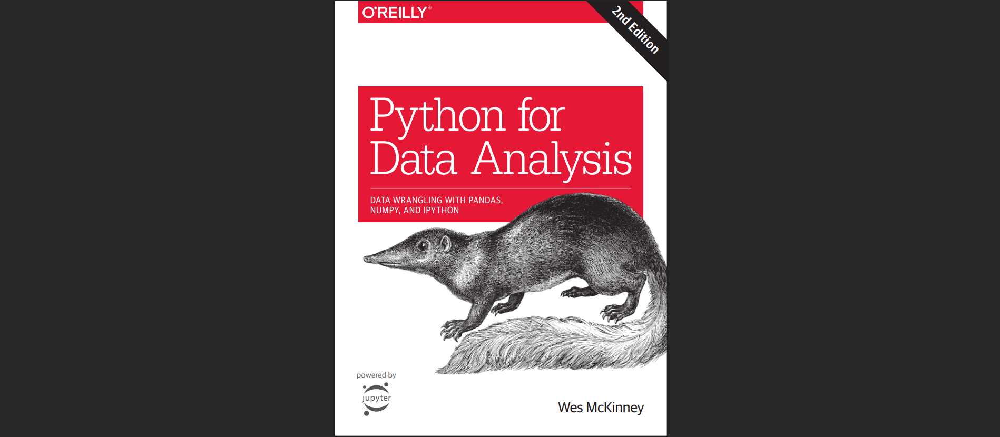
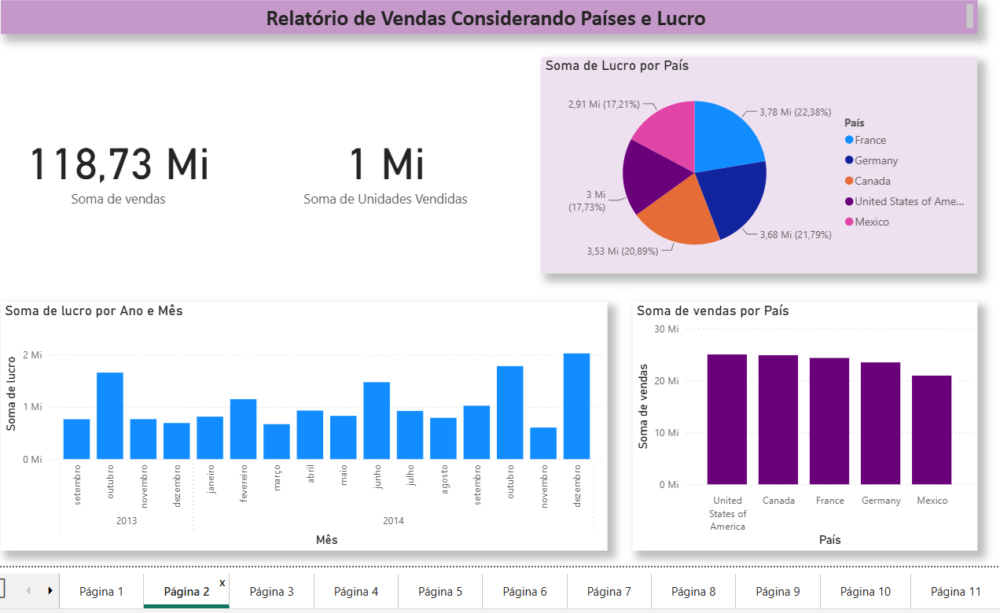
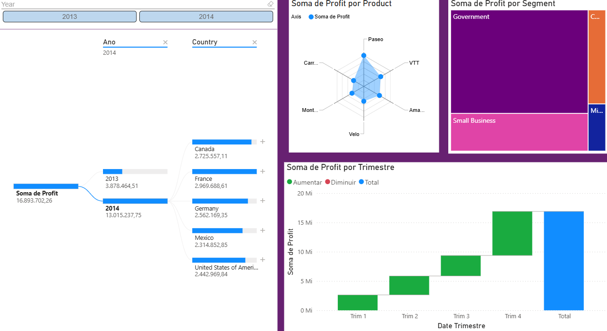

Limpeza de dados com SQL
Nesse projeto foi feita uma limpeza de dados utilizando o SQL Server
Projetos em Python, SQL e PowerBI
www.linkedin.com/in/homerocamargo
Nesse projeto foi feita uma limpeza de dados utilizando o SQL Server

Estudos e exercícios práticos baseados no livro Python para Análise de Dados, de Wes McKinney.
Estudo sobre John Maynard Keynes utilizando o NotebookLM.

Dashboard desenvolvido em Power BI analisando as vendas, lucro e desempenho comercial utilizando o dataset "Financials" da Microsoft.

Projeto desenvolvido durante o curso de Power BI da DIO, utilizando o dataset Financials disponibilizado pela própria ferramenta.